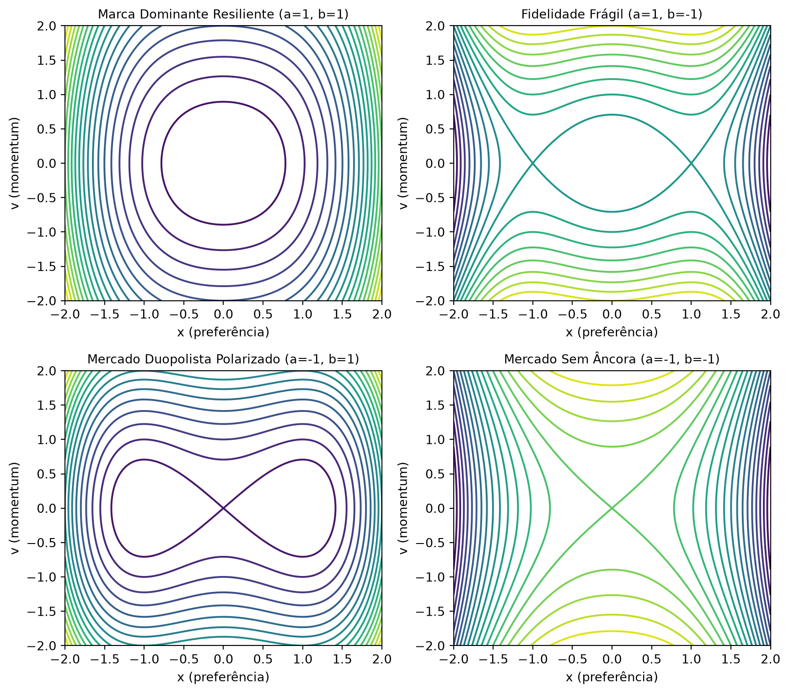
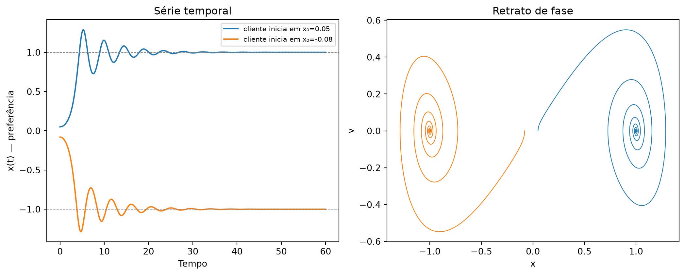
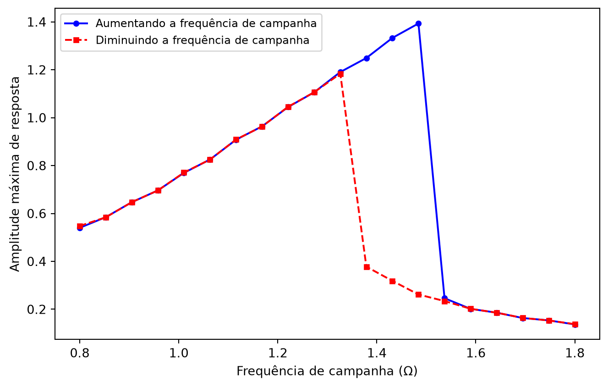
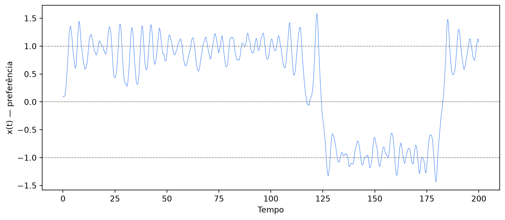
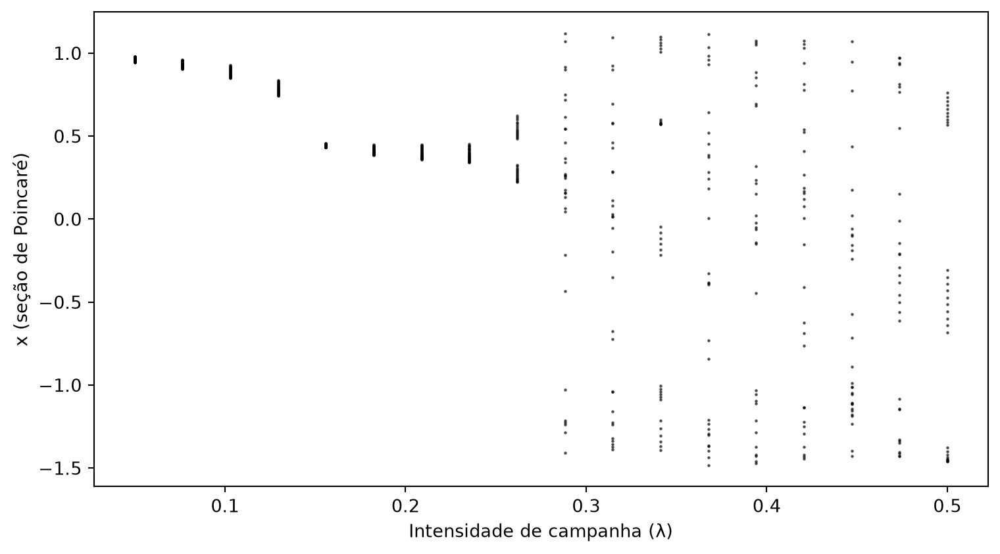

A Física da Fidelidade: O Que a Equação de Duffing Ensina Sobre Guerra de Marcas
python
equações diferenciais
dinâmica não-linear
marketing analytics
alfabetização de dados
data literacy
Author
Jobenil Júnior
Published
September 26, 2026
Por que um cliente fiel à sua marca há anos, do nada, muda para a concorrente — e depois de um tempo, sem nenhum motivo aparente, volta atrás? Por que a mesma campanha de marketing, rodada duas vezes, às vezes “gruda” na cabeça do consumidor e às vezes passa batido? Boa parte do marketing trata esse tipo de comportamento como ruído aleatório. Mas existe um ramo da física e da matemática — a dinâmica não linear — que descreve exatamente esse tipo de padrão: sistemas que ficam “presos” entre dois estados estáveis, que reagem de forma desproporcional a estímulos repetidos e que, sob certas condições, viram completamente imprevisíveis. É a mesma matemática usada para modelar vigas e pontes sob vibração — e ela serve, com uma boa dose de analogia, para modelar a cabeça do seu consumidor.
🌉 De Pontes a Consumidores: Por Que Usar Física em Marketing?
A Equação de Duffing é uma ferramenta clássica da engenharia para descrever osciladores não lineares — sistemas com massa, atrito e uma “força restauradora” que não é simplesmente proporcional ao desvio, como em uma mola comum. Em sua forma geral, ela é escrita como:
\[\ddot{x} + c\dot{x} + ax + bx^3 = F(t)\]
onde \(x\) é a posição do sistema, \(\dot{x}\) sua velocidade, \(\ddot{x}\) sua aceleração, \(c\) o amortecimento, \(a\) e \(b\) os coeficientes de rigidez linear e não linear, e \(F(t)\) uma força externa aplicada ao longo do tempo. Strogatz, em seu clássico Nonlinear Dynamics and Chaos, usa exatamente esse tipo de equação para mostrar como sistemas com “inércia + resistência a mudanças + efeito manada” podem produzir comportamentos ricos — poços de estabilidade, ressonância, histerese e até caos.
Repare que essa combinação — inércia (você não muda de opinião instantaneamente), resistência a mudanças (custo emocional/financeiro de trocar de marca) e efeito manada (quanto mais extrema sua posição, mais ela se autorreforça ou perde força) — não é exclusiva de vigas e pontes. É também uma descrição razoável de como a preferência de um consumidor evolui no tempo. É essa analogia que vamos explorar no post de hoje.
🎢 Do Pêndulo Linear ao Comportamento Não Linear
Uma mola comum (linear) sempre puxa de volta para o mesmo ponto de equilíbrio, com força proporcional ao desvio: desviou o dobro, a força restauradora é o dobro. É um modelo elegante, mas pouco realista para comportamento humano.
Pense em fidelidade de marca: uma pequena insatisfação (o produto atrasou um dia) raramente muda alguma coisa. Mas passado um certo limiar (o produto atrasou, veio errado e o atendimento foi ruim), a reação deixa de ser proporcional — o cliente vira detrator da noite para o dia. Ou o oposto: quanto mais fiel alguém já é a uma marca, mais forte fica o vínculo, e mais resistente ele se torna a qualquer estímulo da concorrência.
É exatamente esse tipo de resposta desproporcional que o termo cúbico \(bx^3\) da equação de Duffing captura. \(a\) continua sendo a rigidez “linear” (a força de atração de curto prazo), mas \(b\) modula como essa força se comporta longe do equilíbrio — reforçando-a (endurecendo) ou dissipando-a (amolecendo) à medida que o desvio cresce.
⚖️ Os Quatro Perfis de Mercado (Caso Conservativo)
Antes de adicionar atrito ou campanhas, vale entender a “geografia” do sistema no seu estado mais puro — sem amortecimento, sem forças externas. Nesse caso conservativo, a energia total do sistema é dada pela função Hamiltoniana:
onde \(x\) é a “posição de preferência” do consumidor (de \(-1\), fiel à Marca A, a \(+1\), fiel à Marca B, passando por \(0\), indeciso) e \(v\) seu “momentum de opinião” — a velocidade com que essa preferência está mudando. Plotando as curvas de nível dessa energia para diferentes combinações de \(a\) e \(b\), aparecem quatro topologias bem distintas:
import numpy as npimport matplotlib.pyplot as pltdef hamiltoniana(x, v, a, b):return v**2/2+ a * x**2/2+ b * x**4/4x_grid = np.linspace(-2, 2, 400)v_grid = np.linspace(-2, 2, 400)X, V = np.meshgrid(x_grid, v_grid)perfis = [ (1, 1, "Marca Dominante Resiliente"), (1, -1, "Fidelidade Frágil"), (-1, 1, "Mercado Duopolista Polarizado"), (-1, -1, "Mercado Sem Âncora"),]fig, axes = plt.subplots(2, 2, figsize=(9, 8))for ax, (a, b, nome) inzip(axes.flat, perfis): H = hamiltoniana(X, V, a, b) ax.contour(X, V, H, levels=20, cmap="viridis") ax.set_title(f"{nome} (a={a}, b={b})", fontsize=10) ax.set_xlabel("x (preferência)") ax.set_ylabel("v (momentum)")plt.tight_layout()plt.show()

Cada um desses quatro painéis representa um “perfil de mercado” bem diferente:
Parâmetros (\(a\), \(b\))
Nome físico
Perfil de mercado
O que significa
\(a=1, b=1\)
Mola endurecedora
Marca Dominante Resiliente
Um único equilíbrio estável; a resistência à mudança cresce com o desvio
\(a=1, b=-1\)
Mola amolecedora
Fidelidade Frágil
Estável só para pequenos desvios; a marca perde força após um limiar
\(a=-1, b=1\)
Duplo poço
Mercado Duopolista Polarizado
Dois equilíbrios estáveis (Marca A / Marca B) separados por uma fronteira
\(a=-1, b=-1\)
Ponto de sela
Mercado Sem Âncora
Nenhuma preferência é estável; qualquer estímulo pequeno diverge
Um mercado “sem âncora” (\(a=-1, b=-1\)) não é hipotético: é o retrato de um hype especulativo, sem propósito de marca nem comunidade por trás — qualquer notícia, boa ou ruim, já é suficiente para mandar a preferência do consumidor para um extremo.
🧲 O Duopólio em Foco: Dois Poços, Uma Fronteira
O terceiro painel acima — o duplo poço (\(a=-1, b=1\)) — é o caso mais interessante para marketing, porque é o que melhor descreve uma disputa real entre duas marcas concorrentes. Repare na curva central em formato de “oito deitado” (uma lemniscata): ela funciona como uma separatriz, dividindo o espaço em dois territórios.
Os dois equilíbrios estáveis ficam em \(x = \pm\sqrt{-a/b}\) — com \(a=-1\) e \(b=1\), isso dá exatamente \(x = \pm 1\): fidelidade plena à Marca A de um lado, à Marca B do outro. Dentro de cada “lóbulo” do oito, o consumidor oscila em torno de uma das marcas sem trocar de lado. Só quando ele cruza a linha central — a fronteira dos indecisos — é que a preferência efetivamente muda de campo. É a base matemática de qualquer mercado polarizado em torno de duas opções fortes (refrigerante, sistema operacional de celular, time de futebol).
🧠 Adicionando Atrito: Clientes Não Mudam de Ideia Instantaneamente
O caso conservativo é útil para entender a “geografia” do mercado, mas nenhum sistema real é livre de atrito. Vamos introduzir o amortecimento \(c > 0\) — que aqui representa o custo de troca: contrato, hábito, ponto de fidelidade, o simples trabalho de aprender a usar outro produto. Isso transforma a equação de 2ª ordem em um sistema de duas equações de 1ª ordem, que resolvemos numericamente com o método Runge-Kutta do scipy.integrate.solve_ivp:
from scipy.integrate import solve_ivpdef duffing_amortecido(t, y, a, b, c): x, v = yreturn [v, -c * v - a * x - b * x**3]a, b, c =-1, 1, 0.3condicoes_iniciais = [0.05, -0.08] # dois clientes quase indecisos, com um empurrãozinho de diferençafig, axes = plt.subplots(1, 2, figsize=(11, 4.5))for x0 in condicoes_iniciais: sol = solve_ivp(duffing_amortecido, [0, 60], y0=[x0, 0.0], args=(a, b, c), max_step=0.05, dense_output=True) t_plot = np.linspace(0, 60, 2000) x_plot, v_plot = sol.sol(t_plot) axes[0].plot(t_plot, x_plot, label=f"cliente inicia em x₀={x0}") axes[1].plot(x_plot, v_plot, lw=0.8)axes[0].axhline(1, color="gray", ls="--", lw=0.7)axes[0].axhline(-1, color="gray", ls="--", lw=0.7)axes[0].set_xlabel("Tempo")axes[0].set_ylabel("x(t) — preferência")axes[0].set_title("Série temporal")axes[0].legend(fontsize=8)axes[1].set_xlabel("x")axes[1].set_ylabel("v")axes[1].set_title("Retrato de fase")plt.tight_layout()plt.show()

Os dois clientes começam praticamente no mesmo lugar — perto da indecisão total (\(x_0\) próximo de zero) — mas de lados opostos da separatriz. O atrito (amortecimento) faz cada trajetória espiralar para dentro, convergindo suavemente para um dos dois focos estáveis: um cliente termina fiel à Marca B (\(x \approx +1\)), o outro à Marca A (\(x \approx -1\)). No retrato de fase, essas espirais são separadas justamente pelo ponto de sela na origem — a mesma fronteira que vimos como uma lemniscata no caso conservativo.
A diferença entre “cliente fiel” e “cliente perdido” às vezes não está em nenhuma grande decisão consciente — está de que lado da fronteira ele começou, por um triz.
📣 O Efeito das Campanhas: Ressonância e o Fenômeno do Salto
Até aqui, nada empurra o sistema de fora — ele só reage às próprias condições iniciais. Campanhas de marketing são justamente esse empurrão externo: um forçamento periódico \(F_t = \lambda\cos(\Omega t)\), onde \(\lambda\) é a intensidade do investimento e \(\Omega\) a frequência com que a campanha se repete.
Vamos simular uma “varredura de frequência”: aumentar \(\Omega\) gradualmente (forward sweep) e, separadamente, diminuir \(\Omega\) a partir do valor mais alto (backward sweep), medindo a amplitude de resposta do mercado em regime permanente em cada frequência:
def duffing_forcado(t, y, a, b, c, lam, Omega): x, v = yreturn [v, -c * v - a * x - b * x**3+ lam * np.cos(Omega * t)]def amplitude_regime_permanente(x0, v0, Omega, a, b, c, lam, T_total=180, janela=30): sol = solve_ivp(duffing_forcado, [0, T_total], [x0, v0], args=(a, b, c, lam, Omega), max_step=0.1, t_eval=np.linspace(T_total - janela, T_total, 800)) x_final = sol.y[0]return np.max(np.abs(x_final)), sol.y[0][-1], sol.y[1][-1]a, b, c, lam =1, 1, 0.05, 0.3omega_range = np.linspace(0.8, 1.8, 20)amp_forward = []x_val, v_val =0.05, 0.0for Omega in omega_range: amp, x_val, v_val = amplitude_regime_permanente(x_val, v_val, Omega, a, b, c, lam) amp_forward.append(amp)amp_backward = []x_val, v_val =0.05, 0.0for Omega inreversed(omega_range): amp, x_val, v_val = amplitude_regime_permanente(x_val, v_val, Omega, a, b, c, lam) amp_backward.append(amp)amp_backward.reverse()fig, ax = plt.subplots(figsize=(7, 4.5))ax.plot(omega_range, amp_forward, "b-o", markersize=4, label="Aumentando a frequência de campanha")ax.plot(omega_range, amp_backward, "r--s", markersize=4, label="Diminuindo a frequência de campanha")ax.set_xlabel("Frequência de campanha (Ω)")ax.set_ylabel("Amplitude máxima de resposta")ax.legend(fontsize=9)plt.tight_layout()plt.show()

Repare em duas coisas importantes. Primeiro, a curva não é uma reta nem uma curva simétrica: ela se inclina — a resposta cresce de forma cada vez mais acentuada até certo ponto e então despenca abruptamente (o chamado jump phenomenon). Segundo, e mais revelador: as curvas azul (aumentando \(\Omega\)) e vermelha (diminuindo \(\Omega\)) não se sobrepõem na faixa intermediária de frequências — elas caem em pontos diferentes. Esse fenômeno se chama histerese: a mesma frequência de campanha pode gerar respostas completamente diferentes dependendo de como você chegou até ali (se estava aumentando ou diminuindo o ritmo de investimento).
Dobrar o investimento em mídia não dobra o resultado de forma linear. Existe uma faixa de frequência de campanha onde o retorno é desproporcional — e o histórico recente de investimento (não só o valor atual) também influencia a resposta do mercado.
🎲 O Fator Imprevisível: Boca a Boca e Ruído Social
Nenhuma empresa controla 100% do que acontece com sua marca — boca a boca, avaliações espontâneas e picos de atenção nas redes sociais funcionam como um ruído aleatório constante. Incorporamos isso como um termo estocástico \(\sigma\, dW_t\), integrado numericamente pelo método de Euler-Maruyama — e, como esse método pode divergir numericamente se o sistema “explodir”, adicionamos desde já uma trava de segurança:
np.random.seed(2026)limite_seguranca =10.0def passo_euler_maruyama(x, v, t, a, b, c, lam, Omega, sigma, dt): Ft = lam * np.cos(Omega * t) dx = v * dt dv = (-c * v - a * x - b * x**3+ Ft) * dt + sigma * np.sqrt(dt) * np.random.normal() x_novo, v_novo = x + dx, v + dvif np.isnan(x_novo) orabs(x_novo) > limite_seguranca:return x, 0.0# trava de segurança: ignora o passo divergentereturn x_novo, v_novoa, b, c =-1, 1, 0.3lam, Omega, sigma =0.05, 1.0, 0.2dt =0.01n_passos =20000x_hist, v_hist, t_hist = [0.1], [0.0], [0.0]for _ inrange(n_passos): x_novo, v_novo = passo_euler_maruyama(x_hist[-1], v_hist[-1], t_hist[-1], a, b, c, lam, Omega, sigma, dt) x_hist.append(x_novo) v_hist.append(v_novo) t_hist.append(t_hist[-1] + dt)fig, ax = plt.subplots(figsize=(9, 4))ax.plot(t_hist, x_hist, lw=0.6, color="#4c8bf5")ax.axhline(1, color="gray", ls="--", lw=0.7)ax.axhline(-1, color="gray", ls="--", lw=0.7)ax.axhline(0, color="black", ls=":", lw=0.7)ax.set_xlabel("Tempo")ax.set_ylabel("x(t) — preferência")plt.tight_layout()plt.show()

O cliente começa fiel à Marca B (\(x_0 = 0.1\), dentro do poço positivo) e, na maior parte do tempo, permanece ali — a curva oscila em torno de \(x \approx 1\). Mas repare que, em alguns momentos, o ruído acumulado é forte o suficiente para empurrar a curva para além da fronteira em \(x=0\), fazendo a preferência “tombar” inteira para o poço oposto por um tempo, antes de eventualmente voltar. Nenhuma campanha causou isso — foi o acúmulo de flutuações aleatórias, o equivalente estatístico do boca a boca.
🌀 Quando o Marketing Agressivo Vira Caos: Rota para a Imprevisibilidade
Por fim, o experimento mais contraintuitivo: o que acontece se aumentarmos gradualmente só a intensidade\(\lambda\) das campanhas, mantendo a frequência \(\Omega\) fixa? Para visualizar isso, usamos uma seção de Poincaré — em vez de olhar a trajetória inteira, coletamos a posição \(x\) apenas uma vez por ciclo de campanha, depois de descartar o transiente inicial:
a, b, c =-1, 1, 0.3Omega_fixo =1.2T_periodo =2* np.pi / Omega_fixodt =0.02passos_por_periodo =int(T_periodo / dt)lambda_range = np.linspace(0.05, 0.5, 18)limite_seguranca =10.0fig, ax = plt.subplots(figsize=(8, 4.5))for lam in lambda_range: x_val, v_val, t_val =0.1, 0.0, 0.0 divergiu =False# Descarta o transiente (60 ciclos de campanha)for _ inrange(60* passos_por_periodo): Ft = lam * np.cos(Omega_fixo * t_val) dv = (-c * v_val - a * x_val - b * x_val**3+ Ft) * dt dx = v_val * dt x_val, v_val = x_val + dx, v_val + dv t_val += dtif np.isnan(x_val) orabs(x_val) > limite_seguranca: divergiu =Truebreakif divergiu:continue# Coleta um ponto por ciclo de campanha (seção de Poincaré) pontos = []for _ inrange(30):for _ inrange(passos_por_periodo): Ft = lam * np.cos(Omega_fixo * t_val) dv = (-c * v_val - a * x_val - b * x_val**3+ Ft) * dt dx = v_val * dt x_val, v_val = x_val + dx, v_val + dv t_val += dt pontos.append(x_val) ax.plot([lam] *len(pontos), pontos, "k.", markersize=1.5, alpha=0.6)ax.set_xlabel("Intensidade de campanha (λ)")ax.set_ylabel("x (seção de Poincaré)")plt.tight_layout()plt.show()

Para valores baixos de \(\lambda\), os pontos coletados a cada ciclo formam uma faixa estreitíssima — o mercado responde de forma quase idêntica campanha após campanha (o regime “período-1”). Conforme \(\lambda\) cresce, essa faixa vai se alargando gradualmente, sinal de que a resposta começa a variar de um ciclo de campanha para o outro. Só que, a partir de um valor crítico de \(\lambda\) (por volta de \(0{,}26\) neste cenário), o comportamento muda de forma abrupta: os pontos deixam de ficar confinados a um único poço e passam a se espalhar entre os dois lados do mercado — a marca registrada de um regime caótico.
Existe uma diferença entre “campanha forte” e “campanha forte demais”. Passado certo ponto, aumentar ainda mais a intensidade de marketing não aumenta o controle sobre o resultado — destrói a previsibilidade da resposta do consumidor.
⚠️ Cuidado com o Overflow (uma nota de bom código, não só de estatística)
Um detalhe técnico que vale a pena destacar: em todos os blocos de código acima que simulam o sistema forçado ou estocástico, existe um limite_seguranca — um teste simples que interrompe a simulação se o valor de \(x\) sair de qualquer faixa fisicamente/comercialmente plausível. Sem essa trava, sistemas não lineares próximos de uma divergência podem gerar números que crescem sem controle a cada passo, até estourar a escala numérica do computador (na prática, valores como \(10^{200}\) — sem nenhum significado real, seja físico ou de negócio).
Isso não é só um detalhe de estilo: é o tipo de erro silencioso que pode arruinar um gráfico ou uma tabela de resultados sem gerar nenhum erro explícito no código. A mesma disciplina que aplicamos para validar um modelo estatístico — checar se os números fazem sentido — vale para o código que gera esses números.
🎯 Em resumo:
Conceito físico (Duffing)
Tradução em marketing
O que revela
Rigidez linear/não linear (\(a\), \(b\))
Força de atração da marca + efeito manada
Se existe 1, 2 ou nenhum “porto seguro” de preferência
Amortecimento (\(c\))
Custo de troca / inércia comportamental
Quão rápido o cliente reage antes de “assentar” numa marca
Forçamento periódico (\(\lambda\cos\Omega t\))
Campanhas de marketing recorrentes
Existe uma frequência/intensidade de campanha com resposta desproporcional (ressonância)
Histerese / salto
Efeito da ordem/histórico das campanhas
A mesma verba pode ter resultado diferente dependendo do caminho percorrido
Ruído estocástico (\(\sigma\,dW_t\))
Boca a boca / redes sociais
Fator fora do controle da empresa que pode empurrar o cliente entre marcas
Bifurcação / caos
Excesso de estímulo de marketing
Ponto em que o comportamento do consumidor deixa de ser previsível
Modelos lineares — a régua e o compasso de boa parte da estatística aplicada a negócios — são ótimos para descrever tendências suaves e respostas proporcionais. Mas fidelidade súbita, viralização inesperada e guerras de marca que “empacam” por anos são, por natureza, fenômenos não lineares. A equação de Duffing não vai substituir sua ANOVA ou sua simulação de Monte Carlo no dia a dia, mas ela oferece um vocabulário matemático preciso para um tipo de comportamento que todo profissional de marketing já viu na prática, mesmo sem saber como nomeá-lo.
Curioso para rodar você mesmo? Altere o np.random.seed, a intensidade lam ou a frequência Omega dos blocos acima e veja como o comportamento do “consumidor simulado” muda. Manda pra gente no WhatsApp o que você encontrou. Obrigado pela leitura!
EDA | TESTE T | ENQUETES | ANOVA | MODELOS DE REGRESSÃO | ANÁLISE FATORIAL | MODELAGEM DE EQUAÇÕES ESTRUTURAIS | TRI | RASCH MODELS | MACHINE LEARNING